Code
Intern work for Pitney Bowes Software
- grails
- illustrator
- groovy
- java
- ajax
- google-maps
Implemented a GUI in the form of a Grails Application for Pitney Bowes' geocoder, GeoStan. Utilized the Google-Maps API to display GeoStan output along side Google output. Click the image to enlarge and then click anywhere to diminish.
 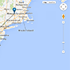
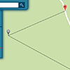
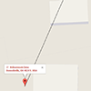
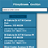
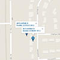
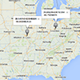
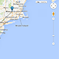
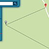
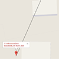
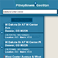
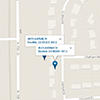
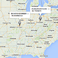
Class Work
Queertionary
- rails
- illustrator
Senior Capstone Project
Created Rails Application to study the use of Queer Jargon. Utilized APIs, such as UrbanDictionary, Tumblr, Twitter, Wikipedia, and Instagram, to compare and contrast word uses.
Digital Media 2
- processing
- java
This class entailed learning the IDE Processing. Based on Java, this language encapsulated the nitty-gritty of the Java programming language, yet allowed for Java objects to be utilized. In addition, this language's main purpose was for fast and easy construction of graphic application. Click the images to enlarge and find out more. Then click anywhere to diminish.
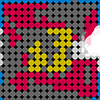
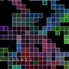


Computer Graphics
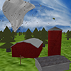- c
- opengl
- ubuntu
My final project for CSCI 4229: Computer Graphics depicts an animation of a tornado. The graphics were created using OpenGL 2.0. View and download the source code on Github. Click the image to enlarge and then click anywhere to diminish.
Group Projects
JamWalkr
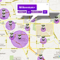Project Manager and Full Stack Architect
- jquery
- twitter-bootstrap
- php
- mysql
- ajax
- google-maps
- 8tracks-api
JamWalkr is a music tagging application. Users are encouraged to tag buildings with moods, genres or artists. As the number of tagged buildings grow, we can see how the citizens of a city think their city sounds.
2013 Mobile App Challenge 3rd Place Winner
Click the image to enlarge and then click anywhere to diminish.
8-Bit Rhino
Project Manager and Lead Software Engineer
- c#
- xna
- visual-studio
- xbox360
Developed a video game for the XBOX 360 using C# and XNA Game Studio. Our video game, Banana Bombers, was an variation on the classic "Bomber Man" game.